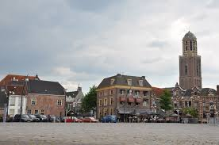

In Zwolle zijn heel veel leuke dingen te vinden, Zwolle ligt aan het
Zwarte Water en de Overijsselse Vecht en is via het Zwolle-IJsselkanaal
verbonden met de IJssel. De stad ligt in de regio IJsseldelta. De
gemeente telt 127.492 inwoners (1 januari 2019, bron: CBS) en is daarmee
de negentiende gemeente van Nederland. Zwolle heeft een oppervlakte van
111,33 km²
In Zwolle werden de verkeersbrug en de spoorbrug over de IJssel
opgeblazen op 10 mei 1940. Daarmee viel ook de telefoonverbinding met
Noord-Nederland weg, die via deze bruggen liep. In Zwolle werd een van
de drie bureaus van de burgerlijke stand voor Duitsers gevestigd. Ook
kreeg Zwolle een van de 57 door de Duitsers ingestelde arbeidsbureaus.
Zwolle kreeg een zg. 'Joodsche Raad', opgericht in opdracht van de
Duitsers. Tijdens de Tweede Wereldoorlog werden 495 joodse inwoners van
Zwolle door de bezetter weggevoerd en in concentratiekampen omgebracht.
Een joods echtpaar beroofde zich van het leven met de Duitsers voor de
deur, en twee joden zijn omgebracht door het verzet in Hattem. Ook zijn
er op diverse plaatsen in de stad mensen gefusilleerd die zich op
enigerlei wijze verzetten tegen de bezetter. Diverse monumenten in de
stad herinneren hieraan, zoals het Monument aan de Meppelerstraatweg en
Monument op de schietbaan Berkum. In het Ter Pelkwijkpark staat het
Oorlogsmonument Zwolle dat de herinnering wakker moet houden aan alle
Zwollenaren die in de Tweede Wereldoorlog om het leven zijn gekomen als
gevolg van oorlogshandelingen. Zwolle werd op 14 april 1945 door
Canadezen bevrijd. Leo Major (1921-2008) was een van de eerste
geallieerde militairen die de stad betrad en vrijwel zelfstandig
verantwoordelijk was voor de terugtrekking van de Duitsers, en daarom
’de bevrijder van Zwolle’ wordt genoemd.
De gemeente Zwolle telde op 1 januari 2019 127.608 inwoners (bron:
Zwolle.nl). Op 14 december 1994 werd de in Westenholte geboren Kyra
Mepschen de 100.000e inwoner van Zwolle. Met de geboorte van Lucas Hoen
verwelkomde burgemeester Henk Jan Meijer de 115.000e inwoner (maart
2007). Sinds 1997 maakt de gemeente Zwolle deel uit van het
Grotestedenbeleid van de regering en zijn er extra middelen beschikbaar
gekomen om de problemen in enkele wijken aan te pakken. Zwolle had in
2017 54.388 huishoudens en de gemiddelde woonruimtebezetting was 2,3. In
2017 was 53% een koopwoning en 47% een huurwoning. In 2017 waren er
11.304 bedrijven binnen de gemeente met 97.993 arbeidsplaatsen. In 1996
waren er nog 59.475 arbeidsplaatsen, en in 2000 waren dat er al 74.022.
Lees hier meer